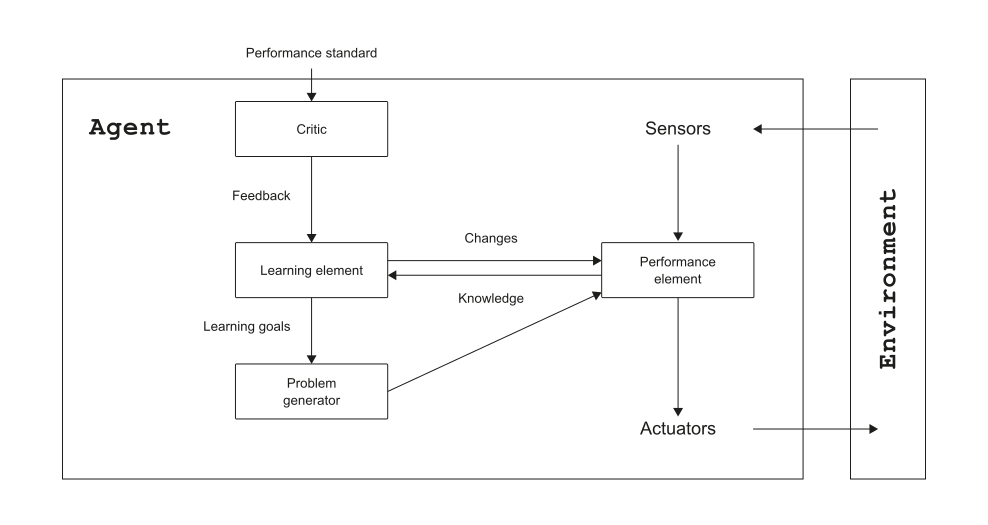
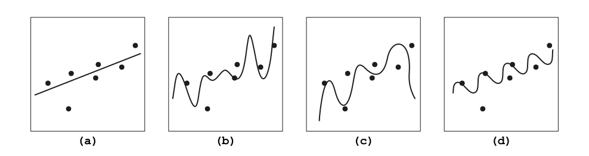
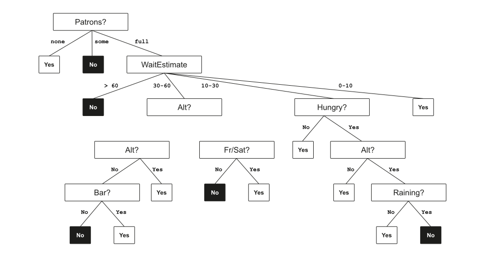
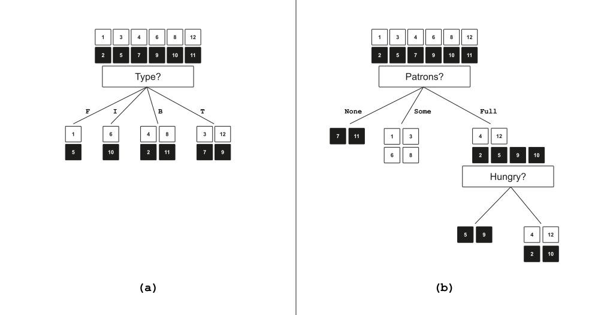
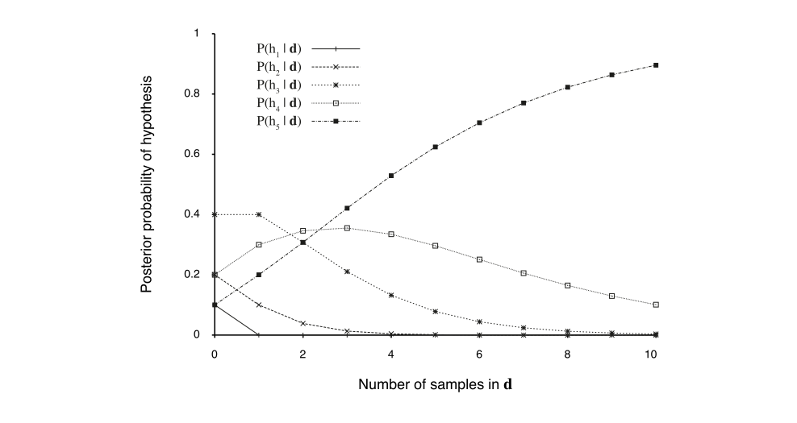

🧠 Introduction to AI — I2AI_7
Andy Weeger
University of Applied Sciences Neu-Ulm
No intelligence without learning.
Learning agents are those that can improve their behavior through diligent study of past experiences and predictions of the future Russel and Norvig (2022, 668)
A learning agent

Performance element: Processes percepts and chooses actions (relates to the basics of AI we have studied so far)
Learning element: Carries out improvements. Requires awareness and feedback on how the agent is doing in the environment
Critic: Evaluation of the agent’s behavior based on a given external behavioral measure (i.e., feedback)
Problem generator: Suggests explorative actions that lead the agent to new experiences
The design of the learning element is influenced by four important aspects:
The type of feedback available for learning is usually the most important factor in determining the nature of the learning problem.
For image classification, usually supervised learning is used. Inputs can be camera images, each one accompanied by an output saying, e.g., “bus” or “pedestrian”. An output like this is called a label. The agents learns a function that, when given a new image, predicts the appropriate label.
The most common unsupervised learning task is clustering: detecting potentially useful clusters of input examples. For instance, when shown millions of images, a computer vision system could identify large cluster of similar images (without “knowing” what is shown on these).
An example for reinforcement learning is a chess agent. Imagine, it is told at the end of a game that it has won (a reward) or lost (a punishment). Based on that feedback, it has to decide which of the actions prior to the reinforcement were most responsible for it, and to alter its actions to aim towards more rewards in future.
Consider the problem faced by me learning to play tennis.
How can we be sure that our learned hypothesis will predict well for previously unseen inputs? I.e., how do we know that the hypothesis \(h\) is close to the target function \(f\) when \(f\) is unknown?
The underlying principle of computational learning theory is, that any hypothesis that is seriously wrong will almost certainly be “found out” with high probability after a small number of examples
Thus, any hypothesis that is consistent with a sufficiently large set of training examples is unlikely to be seriously wrong: that is, it must be probably approximately correct (PAC)
The task of learning is to find good hypotheses about the world.
How do we choose from among multiple consistent hypotheses?
Ockham’s razor: prefer the simplest hypothesis that matches the data

For plots of best-fit functions (\(h\)) from four different hypothesis spaces (\(H\)) trained on a data set (a = linear; b = degree-7 polynomial, c = degree-6 polynomial, d = sinusoidal)
A decision tree is a representation of a function that maps a vector of attribute values to a single output value—a “decision”.
Search is used to find a decision (i.e., performing a sequence of tests).
In Boolean decision trees, the input is a set of vector of input attributes \(X\) and a single Boolean output value \(y\)
Learning process: Definition of the goal predicate in the form of a decision tree.
A Boolean decision tree is equivalent to a logical statement of the form
\[ \begin{flalign} Output \iff (Path_1 \lor Path_2 \lor ...) \end{flalign} \]
where each \(Path_i\) is a conjunction of the form \((A_m = v_x \; \land \; A_n = v_y \; \land \; ...)\) of attribute-value tests corresponding to a path from the root to a \(true\) leaf.
Any function in propositional logic can be represented by a decision tree by translating every row of a truth table to a path in the tree.
This can lead to a tree whose size is exponential in the number of attributes.
Although decision trees can represent functions with smaller trees, there are functions that require an exponentially large decision tree, e.g.
Summary: decision trees are good for some kinds of functions and bad for others.
Supervised learning problem of deciding whether to wait for a table at a restaurant (Russel and Norvig 2022, 668)
The output (\(y\)) is a Boolean variable WillWait
The input (\(x\)) is a vector of ten attributes values (discrete values):

| Example | Alt | Bar | Fri | Hun | Pat | Price | Rain | Res | Type | Est | WillWait |
|---|---|---|---|---|---|---|---|---|---|---|---|
| \(x_1\) | Yes | No | No | Yes | Some | €€€ | No | Yes | French | 0-10 | \(y_1 =\) Yes |
| \(x_2\) | Yes | No | No | Yes | Full | € | No | No | Thai | 30-60 | \(y_2 =\) No |
| \(x_3\) | No | Yes | No | No | Some | € | No | No | Burger | 0-10 | \(y_3 =\) Yes |
| \(x_4\) | Yes | No | Yes | Yes | Full | € | Yes | No | Thai | 10-30 | \(y_4 =\) Yes |
| \(x_5\) | Yes | No | Yes | No | Full | €€€ | No | Yes | French | >60 | \(y_5 =\) No |
| \(x_6\) | No | es | No | Yes | Some | €€ | Yes | Yes | Italian | 0-10 | \(y_6 =\) Yes |
| \(x_7\) | No | Yes | No | No | None | € | Yes | No | Burger | 0-10 | \(y_7 =\) No |
| \(x_8\) | No | No | No | Yes | Some | €€ | Yes | Yes | Thai | 0-10 | \(y_8 =\) Yes |
| \(x_9\) | No | Yes | Yes | No | Full | € | Yes | No | Burger | >60 | \(y_9 =\) No |
| \(x_10\) | Yes | Yes | Yes | Yes | Full | €€€ | No | Yes | Italian | 10-30 | \(y_{10}=\) No |
| \(x_11\) | No | No | No | No | None | € | No | No | Thai | 0-10 | \(y_{11} =\) No |
| \(x_12\) | Yes | Yes | Yes | Yes | Full | € | No | No | Burger | 30-60 | \(y_{12} =\) Yes |
To get a naive solution, we simply construct a tree with one path to a leaf for each example.
We want to find a tree that is consistent with the training set (Table 1) and is as small as possible.
Unfortunately, it is intractable to find a guaranteed smallest consistent tree.
However, with some simple heuristics, we can efficiently find one that is close to the smallest (i.e., “smallish” tree).
Decision tree learning adopts a greedy divide-and-conquer strategy.
Always use the most important attribute first, then recursively solve the smaller subproblems
That way, we hope to get to the correct classification with a small number of tests3
Create the decision tree by applying the divide-and-conquer approach on the restaurant examples (approx. 20 minutes).

In each recursive step there are four cases to consider:
Compare the naive tree with the tree gained by applying the divide-and-conquer heuristic. What differences do you see? (approx. 5 minutes)
Properties of the learning outcome:
To assess the power of the prediction, the following method can be applied:
As the training set grows, the prediction quality increases
Pruning reduces the size of decision trees by removing sections of the tree that are non-critical and redundant to classify instances.
As discussed in chapter probability, probability and utility theory allow agents to deal with uncertainty
To apply probabilistic reasoning, however, the agents must first learn their probabilistic theories of the world from experience
We will discuss statistical learning methods as robust ways to learn probabilistic models
Learning can be viewed as Bayesian updating of a probability distribution over the hypothesis space
\(H\) is the hypothesis variable (values \(h_1, h_2, . . .\))
\(x_i\) gives the outcome of random variable \(X_i\) after \(i\) observations
Training data \(X = x_1,..., x_N\)
Given the data so far, each hypothesis has a posterior probability:
\[ \begin{flalign} P(h_k|X) = \alpha P(X|h_k)P(h_k) \end{flalign} \]
where \(P(X|h_k)\) is called the likelihood
Predictions use a likelihood-weighted average over the hypotheses:
\[ \begin{flalign} P(X_{N+1}|X) = \sum_k{P(X_{N+1}|X,h_k)P(h_k|X)} = \sum_k{P(X_{N+1}|h_k)P(h_k|X)} \end{flalign} \]
Suppose there are five kinds of bags of candies:
Then we draw 10 candies from some bag (\(d_1,...,d_10\)), which are ale lime candies.
What kind of bag is it?
What flavor will the next candy be?
\(P(h_k|X) = αP(X|h_k)P(h_k)\)
\(P(h1 | 5\;limes) = αP(5\;limes | h1)P(h1) = \alpha · 0.0^5 · 0.1 = 0\) \(P(h2 | 5\;limes) = αP(5\;limes | h2)P(h2) = \alpha · 0.25^5· 0.2 = 0.000195α\) \(P(h3 | 5\;limes) = αP(5\;limes | h3)P(h3) = \alpha · 0.5^5 · 0.4 = 0.0125α\) \(P(h4 | 5\;limes) = αP(5\;limes | h4)P(h4) = \alpha · 0.75^5 · 0.2 = 0.0475α\) \(P(h5 | 5\;limes) = αP(5\;limes | h5)P(h5) = \alpha · 1.0^5 · 0.1 = 0.1α\)
\(\alpha = 1/(0 + 0.000195 + 0.0125 + 0.0475 + 0.1) = 6.2424\)
\(P(h_1 | 5\;limes) = 0\)
\(P(h_2 | 5\;limes) = 0.00122\)
\(P(h_3 | 5\;limes) = 0.07803\)
\(P(h_4 | 5\;limes) = 0.29650\)
\(P(h_5 | 5\;limes) = 0.62424\)

\[ \begin{flalign} P(X_{N+1}|X) = \sum_k{P(X_{N+1}|X,h_k)P(h_k|X)} = \sum_k{P(X_{N+1}|h_k)P(h_k|X)} \end{flalign} \]
\[ \begin{align} P(lime \; on \; 6 | 5 \; limes) & = P(lime \; on \; 6 | h1)P(h1 | 5 \; limes) \\ & + P(lime \; on \; 6 | h2)P(h2 | 5 \; limes) \\ & + P(lime \; on \; 6 | h3)P(h3 | 5 \; limes) \\ & + P(lime \; on \; 6 | h4)P(h4 | 5 \; limes) \\ & + P(lime \; on \; 6 | h5)P(h5 | 5 \; limes) \\ & = 0 × 0 \\ & + 0.25 × 0.00122 \\ & + 0.5 × 0.07830 \\ & + 0.75 × 0.29650 \\ & + 1.0 × 0.62424 \\ & = 0.88607 \\ \end{align} \]
What do you observe/learn from this example?
The Bayesian prediction eventually agrees with the true hypothesis
A common approximation is to make predictions based on a single most probable hypothesis
Maximum a posteriori (MAP)6 learning: choose \(h_{MAP}\) maximizing \(P(h_k|X)\)7
\[ \begin{flalign} P(X|d) \approx P(X|h_{MAP}) \end{flalign} \]
For large data sets, prior becomes irrelevant
We are still in the early stages of defining a methodology for machine learning projects; the tools and processes are not as well developed as in software engineering
Russel and Norvig (2022, 722ff) propose a process that involves following typical steps
Figuring out what problem you want to solve compromises three parts:
Real data are messy
ML needs data, a lot of data, of which at least a subset is labeled
Manufacturing these data can be done by own labor or by crowdsourcing (paid, volunteers, users); one might also start with publicly available general-purpose dataset (or a model that has been pretrained) and then add specific data
Maintain a data provenance for all data (i.e., for each columns of your data set, you should know the exact definition, where the data come from, what the possible values are, and who has worked on it)
When data are limited, data augmentation can help (i.e., creating multiple versions of each image by rotating, translating, cropping, or scaling each image, or by changing brightness or color balancing or adding noise)
After correcting overt errors, the data should be preprocessed so that they can be handled more easily
At the end of the day, some machine learning projects succeed and some fail. What makes the difference? Easily the most important factor is the features used. Domingos (2012)
Before starting with building a model, you might start with getting an intuitive feel for the data (e.g., by means of exploratory data analysis)
There is no guaranteed way to pick the best model class, but there are some rough guidelines:
Do what worked well in similar past problems—and search: run experiments with multiple possible models
Doing well with test data is a necessary but not sufficient condition for trust in the model (by you and your stakeholders), it also requires
After the model is deployed to the users, additional challenges will arise
Consider the problem faced by an infant learning to speak and understand a language.
Describe the differences between supervised, unsupervised, and reinforcement learning.
Define the following machine-learning terms in your own words
Draw a decision tree for the problem of deciding whether to move forward at a road intersection, given that the light has just turned green.
What problems do you see? Argue based on the qualification problem discussed in chapter probability.
We never test the same attribute twice along one path in a decision tree. Why not?
Two statisticians go to the doctor and are both given the same prognosis: A 40% chance that the problem is the deadly disease A, and a 60% chance of the fatal disease B. Fortunately, there are anti-A and anti-B drugs that are inexpensive, 100% effective, and free of side-effects. The statisticians have the choice of taking one drug, both, or neither.
What will the first statistician (an avid Bayesian) do? How about the second statistician, who always uses the maximum likelihood hypothesis?
The doctor does some research and discovers that disease B actually comes in two versions, dextro-B and levo-B, which are equally likely and equally treatable by the anti-B drug.
Now that there are three hypotheses, what will the two statisticians do?
The decision is a diagonal line, and all decision tree tests divide the space up into rectangular, axis-aligned boxes. We would have to stack a lot of boxes to closely approximate the diagonal line.
The selection is implemented by means of a choosing attribute test, which is based on information theory and measures the information gain from the attribute tests. For more details please refer to Russel and Norvig (2022, 681 ff)
Meaning that all paths in the tree will be short and the tree as a whole will be shallow
A tree that is too large risks overfitting the training data and poorly generalizing to new samples.
The training set is divided into two groups; 70% of the training set is used to build the tree, and the remaining 30% for validation; leading to three data sets (training, validation, test)
Pronounced “em-ay-pee”
Which is equal to minimizing \(− \log P(X|h_k) − \log P(h_k)\)
Regulations such as the European GDPR require systems to provide explanations